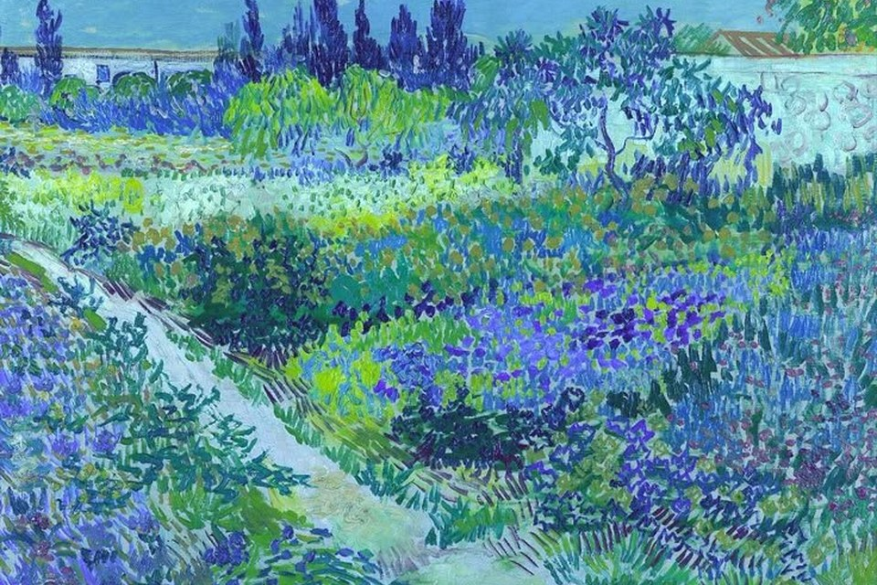

图片墙 · 第 8 式
矩阵网格式
多张图片按照规则网格排列，强调整体性与秩序感。




图注：中缝不动、两翼各转 22°，端列比中缝矮 17%；外缘留一道 3px 纸边。
图片墙 · 第 8 式 矩阵网格式08 / 11
图片墙 · 第 9 式
折页长卷式
图片以连续折页方式展开，形成空间层次与立体感。
图注：折线 66 → 19 → 6 → 19 → 66，相邻两片共用同一对端点；折缝是一道高光接一道暗边。
图片墙 · 第 9 式 折页长卷式09 / 11
图片墙 · 第 10 式
弧幕连屏式
多张竖幅图片沿弧线连续排列，形成环幕视觉效果。
图注：外端 6%–94%、中段 12.5%–87.5%；相邻两片共用同一对折线端点。
图片墙 · 第 10 式 弧幕连屏式10 / 11
图片墙 · 第 11 式 · 内弧
弧幕连屏式（内弧）
同一组竖幅反向弯曲，中段鼓起、两端收进，视线被压回画面中央。
图注：与上页同一组参数，只把弧向翻转过来，中段鼓起、两端收进。
图片墙 · 第 11 式 弧幕连屏式（内弧）11 / 11